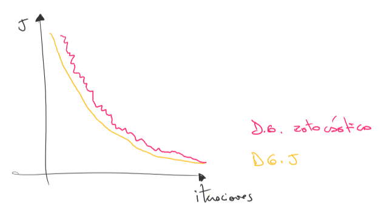
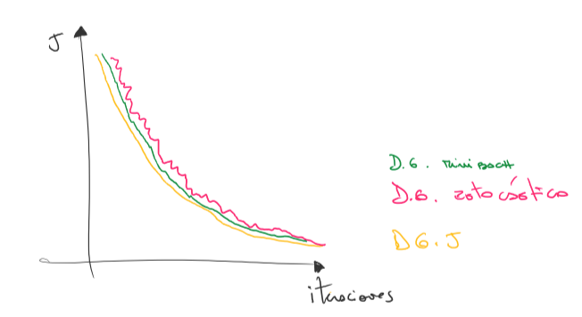
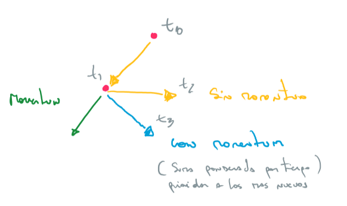
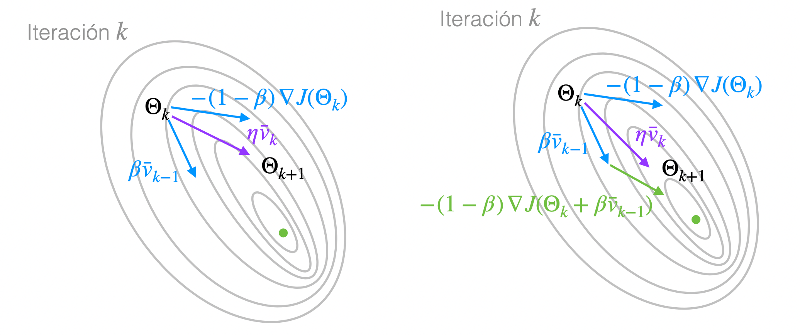
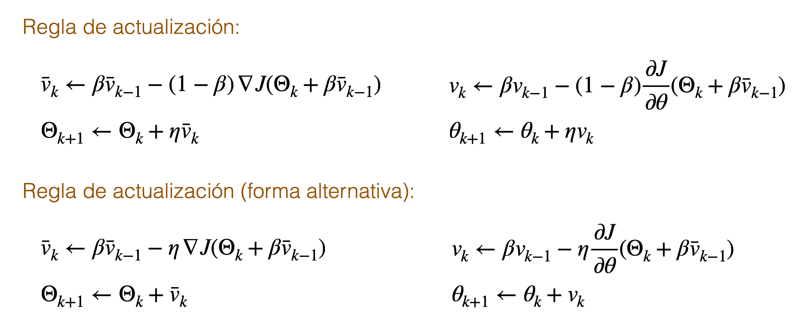
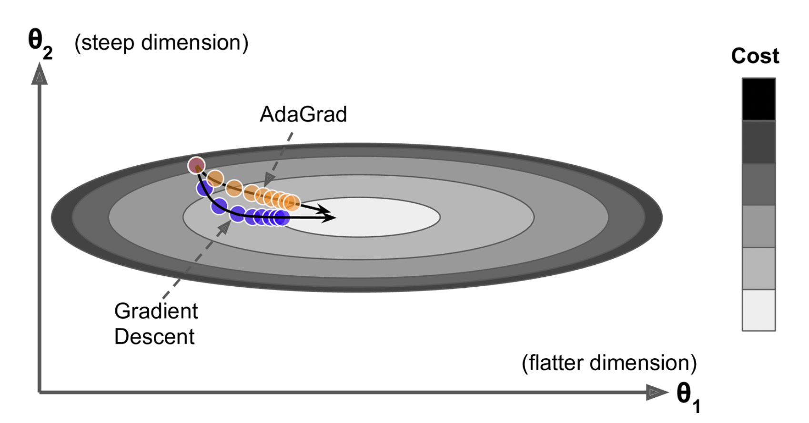
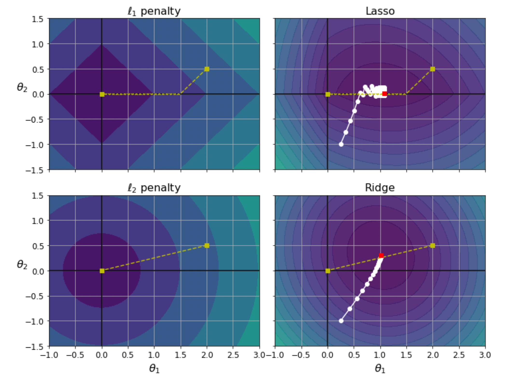

5 Descenso del Gradiente
Variantes del DG.
5.1 Descenso del Gradiente: General
Enunciado de Ejemplo: Muchas veces la función a minimizar corresponde a una suma o un promedio de funciones Por ejemplo aprendizaje supervisado:
Datos {(\bar{x}_i, y_i)_{i=n}^n} donde cada x_i pertenece a \mathbb{R}^m e y_i es la respuesta correcta. e_i es el error de nuestro modelo sobre el dato (\bar{x}_i, \bar{y}_i)
Buscamos los parámetros \Theta que minimicen el error promedio sobre los datos, es decir:
J(\Theta) = \frac{1}{n} \sum_{i =1}^n e_i
5.1.1 Descenso del Gradiente
Datos {(\bar{x}_i, y_i)_{i=n}^n}, \Theta \in \mathbb{R}^d parámetros, J(\Theta) = \frac{1}{n} \sum_{i =1}^n e_i
- Comenzamos en un vector \Theta_0 \in \mathbb{R}^d
- En cada iteración, actualizamos cada parámetro \theta\in \Theta según la regla:
\theta_{k+1}\leftarrow \theta_k- \eta \frac{\partial J}{\partial \theta} (\Theta_k))
Donde \eta la tasa de aprendizaje
- Nos detenemos según un criterio de parada
¿Algún problema con este método?
- Si hay muchos datos (n es grande) puede ser costoso calcular J y sus derivadas
5.1.2 Descenso del gradiente estocástico
Datos {(\bar{x}_i, y_i)_{i=n}^n}, \Theta \in \mathbb{R}^d parámetros, J(\Theta) = \frac{1}{n} \sum_{i =1}^n e_i
- Comenzamos en un vector \Theta_0 \in \mathbb{R}^d
- En cada iteración, escogemos un dato (\bar{x}_i, \bar{y}_i) y actualizamos cada parámetro \theta\in \Theta según la regla:
\theta_{k+1}\leftarrow \theta_k - \eta \frac{\partial e_i}{\partial \theta} (\Theta_k))
Donde \eta la tasa de aprendizaje
- Nos detenemos según un criterio de parada

¿Algún problema con este método?
- Más eficiente
- Comportamiento de convergencia más impredecible
5.1.3 Descenso del gradiente mini-batch
Datos {(\bar{x}_i, y_i)_{i=n}^n}, \Theta \in \mathbb{R}^d parámetros, J(\Theta) = \frac{1}{n} \sum_{i =1}^n e_i
- Comenzamos en un vector \Theta_0 \in \mathbb{R}^d
- En cada iteración, escogemos un mini-batch de datos \{(\bar{x}_i, \bar{y}_i)_\ell^B\}=1 y actualizamos cada parámetro \theta \in \Theta según la regla:
\theta_{k+1}\leftarrow \theta_k - \eta \frac{\partial J'}{\partial \theta} (\Theta_k))
J'(\Theta)= \frac{1}{n}\sum_{\ell=1}^B e_\ell Donde \eta la tasa de aprendizaje
- Nos detenemos según un criterio de parada

Distintas formas de obtener mini-batch:
- Ordenar aleatoriamente los datos e ir extrayendo mini-batches en orden
Una época se termina cuando visitamos todos los datos Es uno de los métodos más utilizados
5.1.4 Descenso por el gradiente con momentum
Idea:
Para escoger la dirección a movernos desde un punto \Theta_0 \in \mathbb{R}^d, no sólo miramos el gradiente actual, sino también cómo nos movimos en el pasado (historia de gradientes pasados)

Regla de actualización:
\bar{v}_k\; \leftarrow(1-\beta)\; \nabla J(\Theta_k)+ \beta\bar{v}_{k-1}
(\bar{v}_k es la dirección a movernos que considera el gradiente actual y la historia pasada; se asume \bar{v}_{-1}=\bar{0}).
\Theta_{k+1}\; \leftarrow \Theta_k-\eta\bar{v}_k
En cada paso, \bar{v}_k es el promedio exponencial móvil de los gradientes hasta el momento
- Le damos prioridad a los últimos gradientes. La prioridad decae exponencialmente
- Un valor común para \beta es 0.9
\bar{v}_k\;= (1-\beta)\;\nabla J(\Theta_k)+ \beta (1-\beta)\;\nabla J(\Theta_{k-1})+ \\ \beta^2 (1-\beta)\;\nabla J(\Theta_{k-1})+ \dots+ \beta^i (1-\beta)\;\nabla J(\Theta_{k-i})+\dots+ \\\beta^k (1-\beta)\;\nabla J(\Theta_{0}) (Si \beta = 0.9 e i = 100, entonces \beta^i (1 − \beta) = 0.00000265613)

En cada paso, \bar{v}_k es el promedio exponencial móvil de los gradientes hasta el momento - Le damos prioridad a los últimos gradientes. La prioridad decae exponencialmente - Un valor común para \beta es 0.9
Regla de actualización:
v_k\; \leftarrow(1-\beta)\;\frac{\partial J}{\partial \theta}(\Theta_k)+ \beta v_{k-1}
\Theta_{k+1}\; \leftarrow \Theta_k-\eta v_k
Regla de actualización (otra opción):
\bar{v}_k\; \leftarrow \beta\bar{v}_{k-1} -(1-\beta)\; \nabla J(\Theta_k)
v_k\; \leftarrow \beta v_{k-1}-(1-\beta)\;\frac{\partial J}{\partial \theta}(\Theta_k)
5.1.5 Descenso por el gradiente con momentum + Nesterov
Idea:
En vez de mirar los gradientes pasados y el gradiente en el punto actual, miramos los gradientes pasados y el gradiente en un punto futuro, según el momentum


5.2 Métodos adaptativos: AdaGrad, RMSProp, Adam
Idea Queremos una tasa de aprendizaje adaptativa, que cambie en el tiempo
5.2.1 AdaGrad
- Idea: Avanzar de manera uniforme en todas las dimensiones (parámetros)
- Normalizamos la tasa eta por la historia de los gradientes (sus cuadrados)

Regla de actualización (por parámetro):
r_k = \leftarrow r_{k-1}+ \frac{\partial J}{\partial\theta}(\Theta_k)^2
(r_k almacena la suma de los cuadrados de todos los gradientes)
\theta_{k+1} \leftarrow \theta_k - \frac{\eta}{\sqrt{r_k}} \cdot \frac{\partial J}{\partial\theta}(\Theta_k)
5.2.2 RMSProp:
- Idea: Avanzar de manera uniforme en todas las dimensiones (parámetros)
- Normalizamos la tasa \eta por el promedio exponencial móvil de los cuadrados de los gradientes
Regla de actualización (por parámetro):
s_k = \leftarrow \beta s_{k-1}+ (1-\beta)\frac{\partial J}{\partial\theta}(\Theta_k)^2 \theta_{k+1} \leftarrow \theta_k - \frac{\eta}{\sqrt{s_k}} \cdot \frac{\partial J}{\partial\theta}(\Theta_k)
5.2.3 Adam:
Idea: Combinar descenso con momentum y RMSProp
Regla de Actualización
v_k \leftarrow \beta_1 v_{k-1}- (1-\beta_1)\frac{\partial J}{\partial\theta}(\Theta_k)
s_k \leftarrow \beta_2 s_{k-1}+ (1-\beta_2)\frac{\partial J}{\partial\theta}(\Theta_k)^2 v'_k \leftarrow \frac{v_k}{1-(\beta_1)^k} s'_k \leftarrow \frac{s_k}{1-(\beta_2)^k}
\theta_{k+1} \leftarrow \theta_k + \frac{\eta}{\sqrt{s'_k}} \cdot v'_k
Típicamente, \beta1 = 0.9, \beta2 = 0.999, \eta = 0.001
5.3 Regularización
Idea:
- Agregar un término de penalización para obtener soluciones “simples”
En Machine Learning:
- Obtener modelos más simples
- Parámetros más pequeños o menos parámetros (modelo sparse)
- Modelos simples ayudan a evitar overfitting
5.3.1 Regularización \ell_2
Idea: - Favorecer soluciones con parámetros pequeños
En vez de minimizar J(Θ), minimizamos:
\tilde{J}(\Theta) = J(\Theta) + \alpha\|\Theta\|_2^2
Donde |\Theta\|_2 = \sqrt{\sum_{i=1}^m \theta_i^2} para \Theta = (\theta_1, \dots, \theta_m)
- El término \apha mide cuánto peso tiene la regularización
- El término \alpha\|\Theta\|_2^2 es diferenciable luego podemos aplicar las variantes de descenso del gradiente
(notar \nabla\alpha \|\Theta\|_2^2= 2\alpha\Theta)
Caso de Regresión Lineal minimizamos:
\tilde{J}=\frac{1}{n}\sum_{i=1}^{n} (\Theta^T\bar{x}_i- y_i)^2+ \alpha\|\Theta\|_2^2
Esto se llama Ridge Regression
Regla del gradiente:
\Theta \leftarrow \Theta-\eta\; \left(\frac{2}{n}X^T(X\Theta-\bar{y})+2\alpha\Theta\right)
Forma Alternativa:
\Theta \leftarrow \Theta-\eta\; \frac{2}{n}X^T(X\Theta-\bar{y})+2\eta\alpha\Theta \Theta \leftarrow (1-2\eta\alpha)\Theta-\eta \frac{2}{n}X^T(X\Theta-\bar{y}) Es decir, la regla normal con \beta extra:
\Theta \leftarrow \beta \Theta-\eta\; \frac{2}{n}X^T(X\Theta-\bar{y})
5.3.2 Regularización \ell_1
Idea:
- Favorecer soluciones con menos parámetros
En vez de minimizar J(Θ), minimizamos:
\tilde{J}(\Theta) = J(\Theta) + \alpha\|\Theta\|_1
Donde |\Theta\|_1 = \sum_{i=1}^m |\theta_i| para \Theta = (\theta_1, \dots, \theta_m)
¿ Cuánto es \nabla\alpha\|\Theta\|_1 ?
$$= \begin{cases} 1, & \text{si } \theta > 0 \\ -1, & \text{si } \theta < 0 \end{cases}$$
Para implementar descenso por el gradientes es común asumir:
$$= \begin{cases} 1, & \text{si } \theta > 0 \\ 0, & \text{si } \theta = 0 \\ -1, & \text{si } \theta < 0 \end{cases}$$
\nabla\alpha\|\Theta\|_1= \alpha \text{ sing}(\Theta)
$$()= \begin{cases} 1, & \text{si } \theta > 0 \\ 0, & \text{si } \theta = 0 \\ -1, & \text{si } \theta < 0 \end{cases}$$ En el caso de Regresión Lineal esto se llama Lasso Regression
5.3.3 Ridge vs Lasso

5.3.4 Combinando \ell_1 y \ell_2
Podemos combinar las dos técnicas anteriores y minimizar:
\tilde{J}(\Theta) = J(\Theta) + ra\|\Theta\|_1 +(1-r)a\|\Theta\|_2^2
donde $0 ≤ r ≤ 1 $es un parámetro
En el caso de Regresión Lineal esto se llama **Elastic Net^^
5.4 Referencias
Book: Hands-on Machine Learning with Scikit-Learn, Keras, and TensorFlow - Aurélien Géro
Video: Descenso de Gradiente. Cómo Aprenden las Redes Neuronales | Aprendizaje Profundo. Capítulo 2